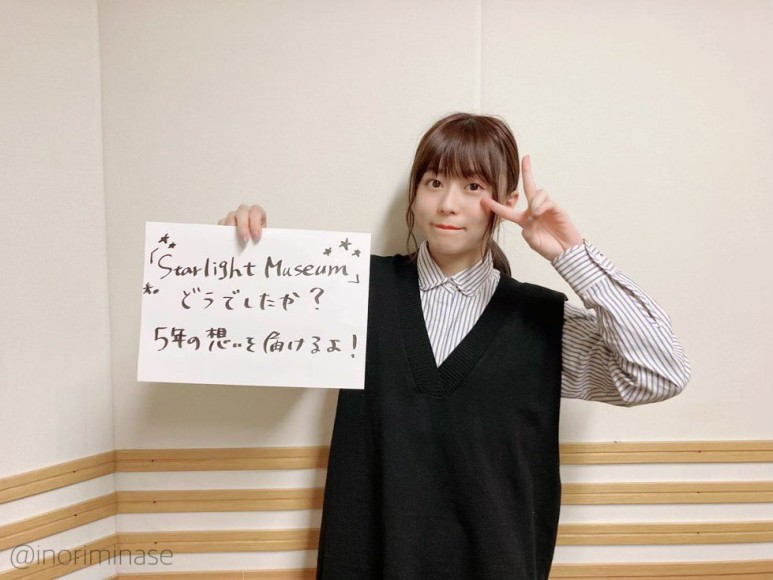
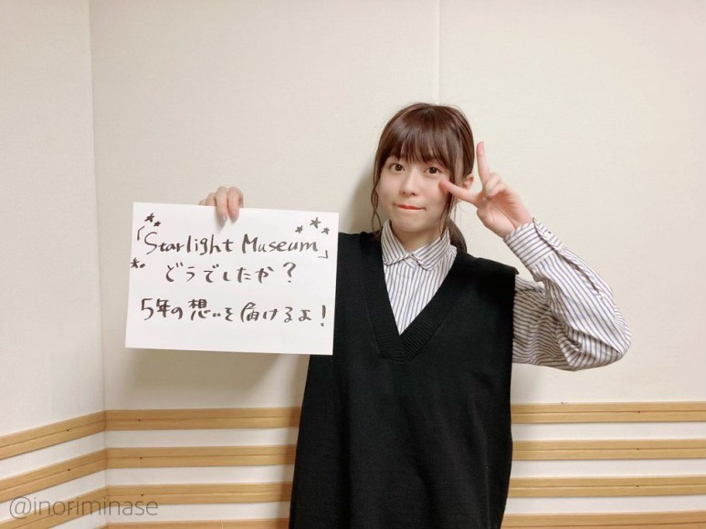
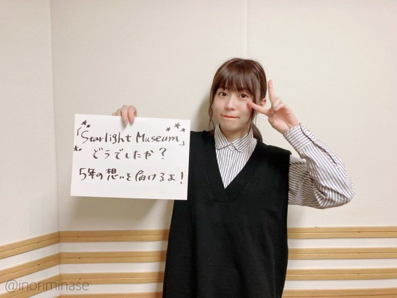

미나세 이노리 (水瀬いのり)
미나세 이노리
토우아먀 나오
하야미 사오리
혼도 카에데
*혜성처럼 나타난 천재 성우*

액셀원 소속 일본의 성우이자 가수이다. 2018년 기준 '와카테 여자 성우 아티스트 넘버원'이다.
아! 미나세 이노리 아시는구나! 미나세 이노리 겁.나.인기많습니다.
멜로디 플래그(Melody Flag) 라는 라디오도 하고있는데 꽤 괜찮습니다.
후.욱.후.욱
 
